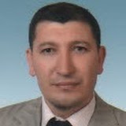
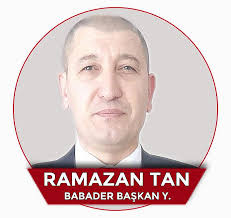
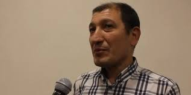

Civil Engineer | Healthcare Infrastructure Specialist
Ramazan Tan is a civil engineer based in Ankara, Türkiye, specializing in healthcare infrastructure and hospital engineering. With extensive experience in the public sector, he has been responsible for the planning, maintenance, and technical management of critical hospital facilities serving thousands of patients daily.

With years of experience in public healthcare infrastructure, Ramazan Tan has developed strong expertise in hospital facility management, structural planning, and operational safety. His career has been defined by a commitment to ensuring that healthcare environments remain functional, safe, and reliable at all times.
His work supports the daily functioning of healthcare institutions that serve thousands of patients across Ankara. From overseeing technical infrastructure to coordinating maintenance programs, his role ensures that the physical environments where medical care is delivered meet the highest standards of reliability and safety.
Currently serving as the infrastructure lead at Yenimahalle State Hospital — one of Ankara's key public healthcare facilities — Ramazan Tan brings a systematic, detail-oriented approach to every project he manages.
"Ensuring operational reliability in healthcare environments where every second and every technical detail counts."
Structural integrity and infrastructure design for complex healthcare facilities.
Technical management of hospital systems including HVAC, electrical, plumbing, and medical gas infrastructure.
Coordinating large-scale maintenance and renovation projects within active hospital environments.
Navigating Türkiye's Ministry of Health regulations and international safety compliance.
President of BABADER — championing father and child rights in Türkiye.
Babalar ve Çocuklar Derneği
(Fathers & Children Association)

Beyond his engineering career, Ramazan Tan serves as the President of BABADER (Babalar ve Çocuklar Derneği — Fathers and Children Association), a civil society organization headquartered in Ankara dedicated to advocating for the rights of fathers and children within Türkiye's family law system.
Under his leadership, BABADER conducts research on family law, publishes policy analyses, organizes workshops, and issues public statements on critical topics affecting families. The association works to promote equitable custody practices, reform family court procedures, and ensure that children's well-being remains at the center of legal decisions.
Professional moments from a career dedicated to healthcare infrastructure.

Public speaking and media contributions on critical social and legal topics.
Istanbul Convention & Law 6284 — Ramazan Tan
A proven track record in healthcare infrastructure engineering across Ankara's leading public hospitals.
Yenimahalle State Hospital, Ankara
Leading all infrastructure and technical facility management operations at one of Ankara's major public hospitals. Responsible for structural maintenance planning, renovation projects, safety compliance, and coordination with medical staff to ensure uninterrupted hospital operations.
Etlik İhtisas Training & Research Hospital
Managed technical systems and infrastructure at one of Türkiye's prominent training and research hospitals. Gained foundational expertise in healthcare-specific engineering challenges and regulatory requirements.
Public & Private Infrastructure Projects
Built a strong foundation in civil engineering through various public and private sector construction and infrastructure projects across Türkiye.
Core competencies developed through years of hands-on experience in healthcare facility engineering.
Technical oversight of large-scale hospital complexes, ensuring all building systems operate at peak performance to support continuous patient care delivery.
Strategic maintenance scheduling and structural reliability assessment of medical environments. Long-term planning for facility upgrades and modernization.
Ensuring international standards for patient and staff safety. Implementing safety protocols and emergency preparedness systems across all facility operations.
Navigating the technical requirements of Türkiye's Ministry of Health standards. Expert understanding of public procurement and regulatory compliance.
Whether you have a question about healthcare infrastructure projects, need engineering consultation, or would like to connect professionally — feel free to reach out.
Ankara, Türkiye
Yenimahalle State Hospital